| |
En nuestra memoria
Además de Juan Uviedo, son varios los titeanos que ya no están con nosotros
pero perdurarán por siempre en nuestra memoria.
|
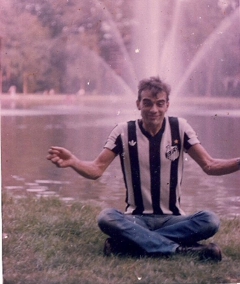
|
Gallego (Rubén Santillán). Uno de los dirigentes del
TiT después del arresto de Juan, formó su propio grupo y realizó varios
montajes e investigaciones ("Para
cenar: Artaud", "El teatro y su doble", "Lágrimas fúnebres, pompas de sangre").
Participó de Alterarte II, donde dirigió
la intervención "La peste". En 1984 codirigió "Esperpentos"
con Raúl Zolezzi. A mediadios de los '80 fue a vivir
a Brasil, primero a San Pablo y luego a la pequeña localidad balnearia
Ubatuba, donde se estableció, llevando hasta el final de sus días una
vida austera y solitaria. Solo rompió efímeramente su aislamiento
voluntario viajando a Sao Tomé das letras para participar en el
documental tributo a Juan. Murió enfermo en Buenos Aires a fines de 2015. |
|
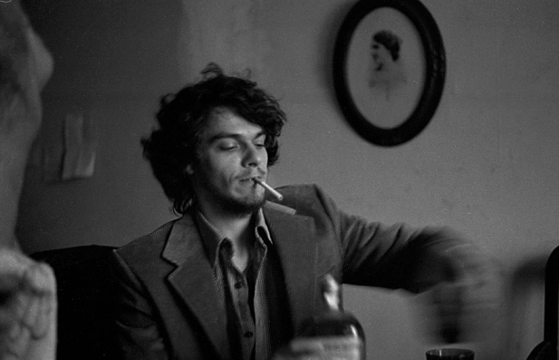
|
Sergio Bellotti. Participó en el Grupo de Gallego
y luego fue unos de los fundadores del TiC (Taller de investigaciones
cinematográficas). Viajó a Brasil para Alterarte II.
Disueltos los talleres hizo su carrera como guionista y director de cine,
llegando a realizar varias películas documentales y otras de ficción con
actores reconocidos ("Tesoro mío" en 1999, "Sudeste"
en 2002, "La vida por Perón" en 2004).
Detalle de su obra en
Wikipedia.
Murió enfermo a fines de 2012. |
|
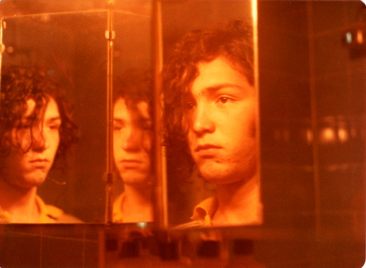
|
Marinho (Marco Sadowski). Fue miembro del Grupo de
Gallego y uno de los promotores del Zangandongo.
Viajó a Brasil para Alterarte II. Disueltos los talleres formó un grupo en Polonia.
A mediados de los '80 se mudó a París, donde formó parte del grupo artístico-multimediático de
intervención urbana "Les arzonautes", con base en diversos
atelieres reciclados de viejas usinas desafectadas por la desindustrialización.
En los '90 se mudó a
México para replicar la experiencia en ese país, donde murió
en 1997 en un accidente automovilístico. |
|
|
Gaby (Gabriela Liffschitz). Fue miembro del Grupo de
Gallego y viajó a Brasil para Alterarte II. Disueltos los
talleres se convirtió en escritora y fotógrafa profesional. Escribió
dos libros de cuentos ("Venezia" en 1990 y "Elisabetta"
en 1995). En 1999 se le debió extirpar la mama izquierda por estar
afectada de cáncer. Desde allí su producción artística giró alrededor
de los efectos emocionales y psicológicos de ese dramático episodio (el
advenimiento de la muerte, el amor a la vida, el reconocimiento de su
cuerpo), editando libros con textos y fotos que muestran artísticamente
su cuerpo desnudo mutilado (editó "Recursos humanos" en
2000 y "Efectos colaterales" en 2003). A raíz de su
enfermedad falleció en 2004. Después de su muerte se estrenó la
película "La puta y la ballena", dirigida por Luis
Puenzo, que había contado con su colaboración en la idea general.
Detalle de su obra en
Wikipedia.
|
|
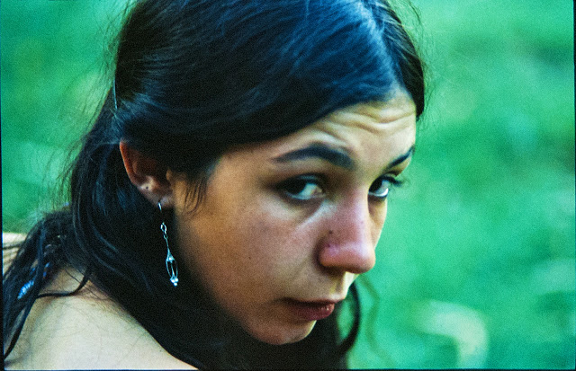
|
Cecilia Illia. Fue miembro del Grupo de Gallego y una
impulsora primaria del Zangandongo.
Disueltos los talleres estudió, se recibió y trabajó de psicóloga. En
2014 editó la novela "Vueltas negras, pájaros de piedra".
Nota sobre su libro en
Página 12.
Murió enferma en marzo de 2016.
|
|
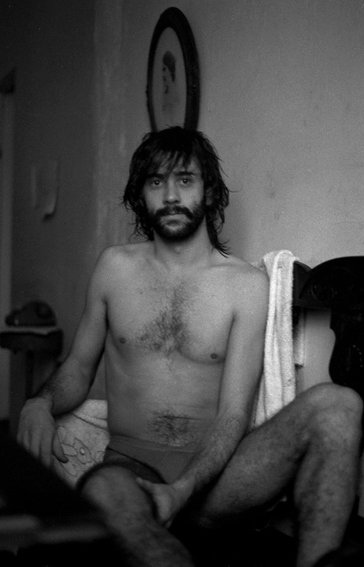
|
Daniel Fiorucci. Fue miembro del Grupo de Ricardo
y del TiC. Viajó a Brasil para Alterarte II. Murió
muy joven en los '80 en un accidente automovilístico. |
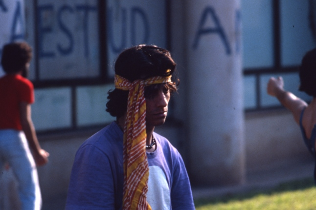 |
Gusano (Gustavo Cacioni). Fue miembro del Grupo de Gallego
y viajó a Brasil para Alterarte II. Se suicidó en 2005 por tener
una enfermedad terminal. |
|
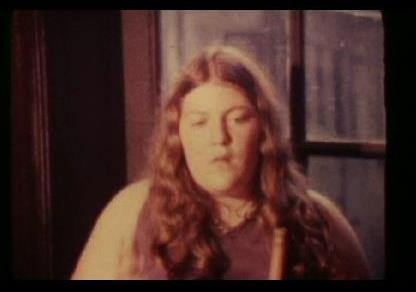 |
Maggie, del Grupo de Marta. Se suicidó en 1981. |
|
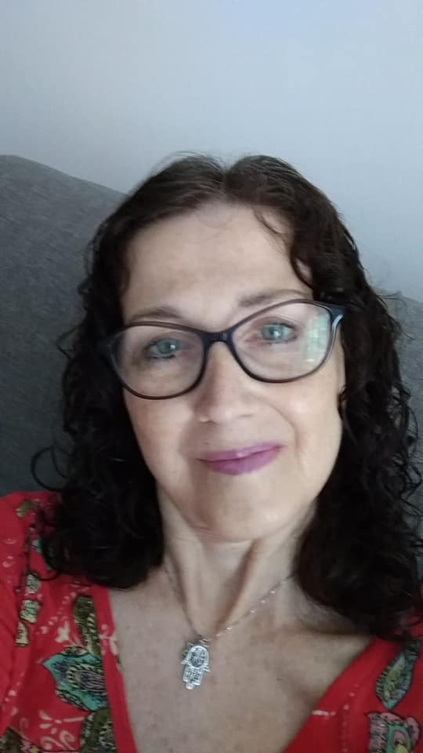 |
Silvina
Epszteyn. Fue miembro del Grupo de Gallego
y viajó a Brasil las dos veces, la segunda para Alterarte II.
Durante muchos años fue representante y productora de su compañero
Miguel Mac Fhanton, artista exCucaño. Murió enferma en agosto de 2019. |

Fotos de titeanos jóvenes...
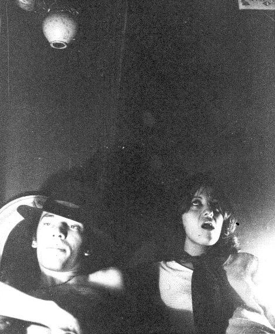
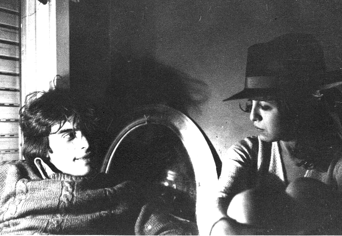
Arriba izquierda: Raúl Zolezzi y Marta; derecha: Gallego y Marta (ambas
fotos de 1978).
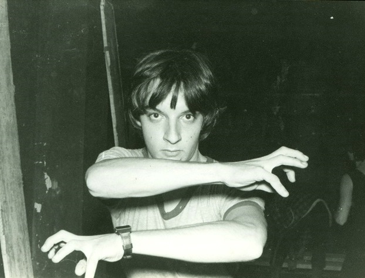
Mauri Armus, 1979.
|
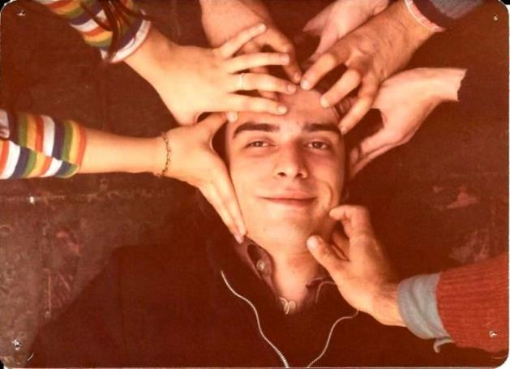
Gallego y su grupo en un ensayo (1979).
|
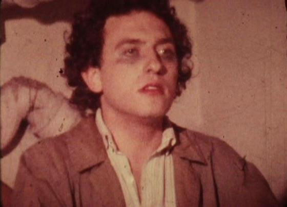
Norberto López
|
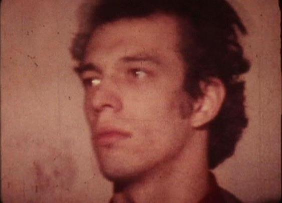
Raúl Zolezzi
|
|
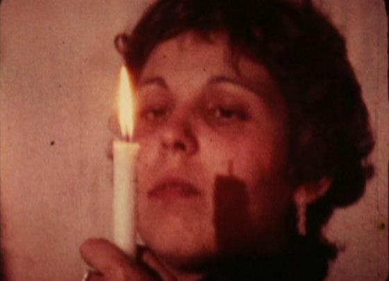
Marcela Pomerantz
|
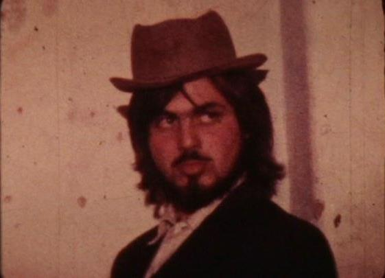
Marcelo Cirelli
|
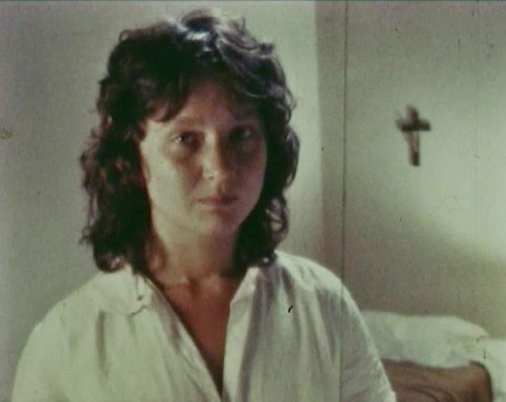
Paula Caraballo
|
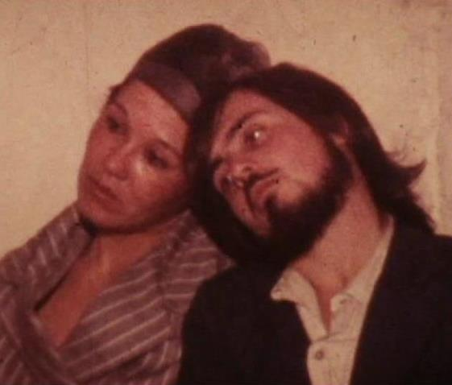
María Seles, con Marcelo
|
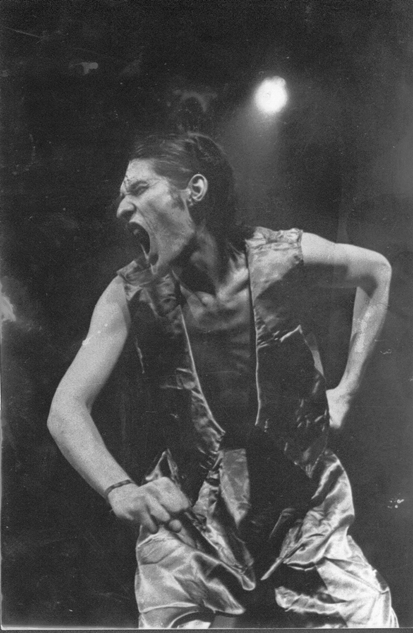
Cthulhu
|
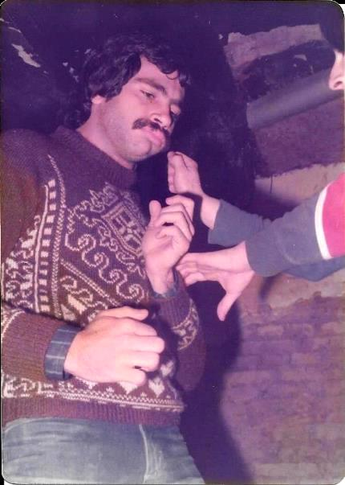
Batata, con Mauri Armus |
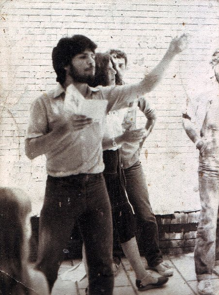
Luis María Brand (productor de recitales de rock desde principio de
los '90)
|
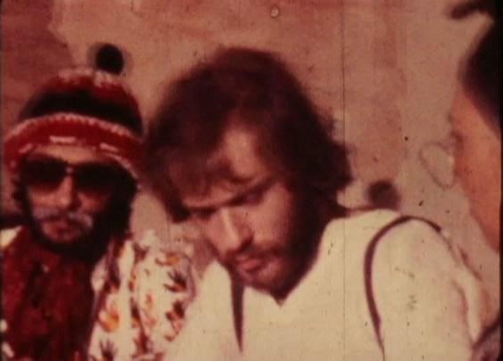
Patán (Ricardo
Ragendorfer). Después del TiT hizo una prolífica carrera como periodista y
escritor. Editó varios libros. Coescribió el libro "El bonaerense" (haciendo alución a
la policía de la provincia de Buenos Aires) en base al cual Pablo Trapero
realizó un film del mismo nombre en 2002 (Ragendorfer colaboró con el
guión). |
|
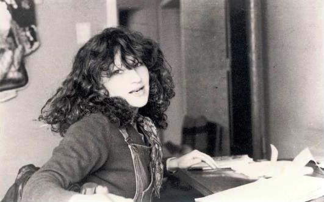
Irene Moszkowski |
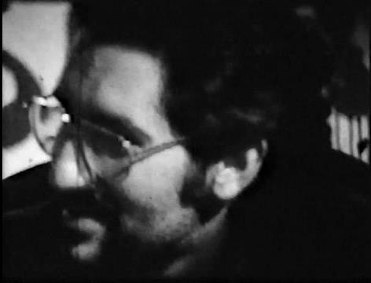
Chacho (Pablo Navarro Espejo; cofundador en 1988 de la productora de
documentales Adoquín Video Digital)
|
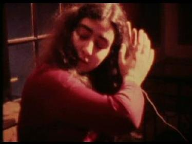
Diana Colozzo, la más joven
|
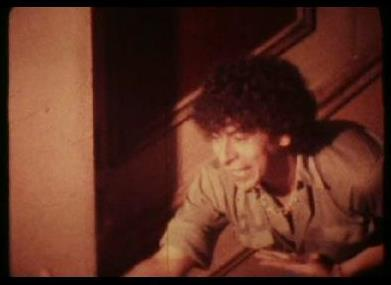
José Luis Fernández
|
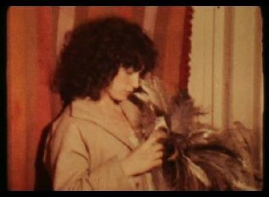
Silvina Epsztein |
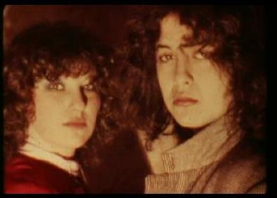
Irene y Marta
|
...y no tan jóvenes
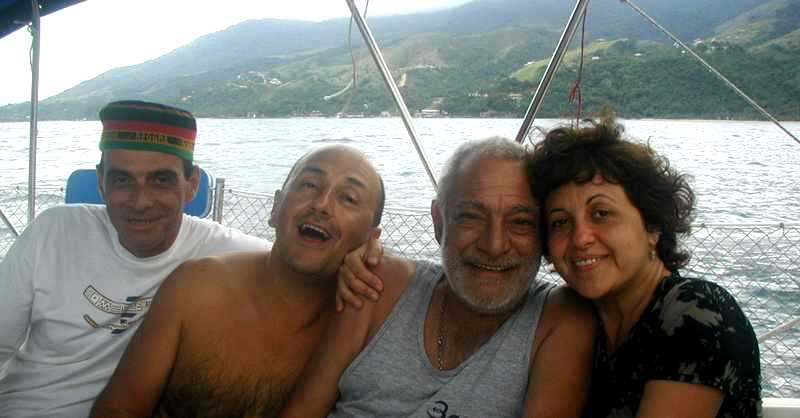
Juan y sus queridos discípulos Gallego, Ricardo y Marta, durante un reencuento
en 2003 en Brasil.
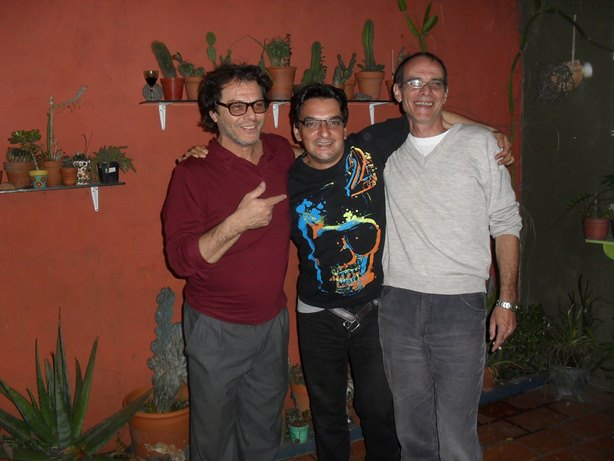
Otro reencuentro. Buenos Aires, 2010, Sergio, Mauri y Gallego.
|